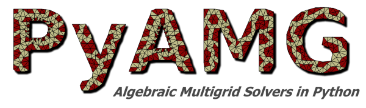

Workshop
Wednesday, March 28, 2012
8:00 pm - 9:00pm
PyAMG Tutorial
Luke Olson and Jacob Schroder
|
|

|
Abstract
This tutorial gives an overview of the software package PyAMG
(www.pyamg.org), a Python module aimed at portable,
efficient and reproducible algebraic multigrid (AMG) methods, and also at rapid
prototyping of new methods. PyAMG includes classical AMG and smoothed aggregation (SA),
in addition to newer techniques, such as advanced coarsening and energy-minimization
of coarse grids, making the package an accessible environment for extending popular
existing methods and comparing against new methods.
PyAMG is easy-to-use and the code is readable, making it especially well-suited
for
- Use in courses
- Rapid prototyping of new multigrid methods
- Running simulations with ~106 unknowns on typical desktops or laptops
These features have contributed to PyAMG's popularity, with thousands of downloads from over one hundred countries. It is being used for core development of AMG, it has proven to be an efficient solver for a variety of applications in the sciences and imaging, and it has been easily integrated into several largely Python-based simulation packages.
This tutorial focuses on the recently released version 2.0.4, and is broken up into three parts, in order to highlight features for beginning, intermediate, and advanced users.
Tutorial Format
The tutorial includes optional interactive components, and participants are
encouraged to pre-install PyAMG 2.0.4 and its dependencies. Alternatively,
participants may bring laptops and use provided bootable DVDs, which boot into
a Linux environment with all the required packages pre-installed. However, the
boot discs will not provide a full-featured environment where results and
scripts can be saved locally.
PyAMG has been
tested in Python 2.6 and 2.7 and depends on SciPy (>0.7.1), which is used for sparse
matrix support and operations, as well as NumPy (>1.4.1). Additionally, Nose
(>0.11.3) is required to execute unit tests in the package and Matplotlib
(>0.99.1) is required for many of the demos in the Examples directory. The
tutorial will utilize features of the interactive Python environment iPython,
and several of the advanced examples will use a g++ compiler to link the C++
code snippets to the Python code.
PyAMG 2.0.4 source and binaries are available through the project downloads page.
The dependencies can be installed through package managers, from binaries
directly supplied by the packages, or by compiling from source.
The dependencies and recommended packages again are
After installation, PyAMG, NumPy and SciPy should be tested. From the interactive iPython prompt, type
>>> import numpy, scipy, pyamg
>>> numpy.test()
>>> scipy.test()
>>> pyamg.test()
Tutorial Outline
Beginners
Overview of Matlab-like interface available through SciPy and NumPy
Overview of structure and functionality of PyAMG package
Classical AMG and SA
Krylov solvers
Relaxation methods
Multilevel-solver object
Intermediate
Plotting and visualizations through Paraview and Matplotlib
Overview of some advanced coarsening and interpolation options
How to modify an existing multilevel solver object
Advanced
Overview of the hybrid C++/PyAMG framework
Swig provides language interface and basis for efficiency
Basic Swig example, i.e., calling a C++ function from Python
Developers will be available for discussion following the tutorial.